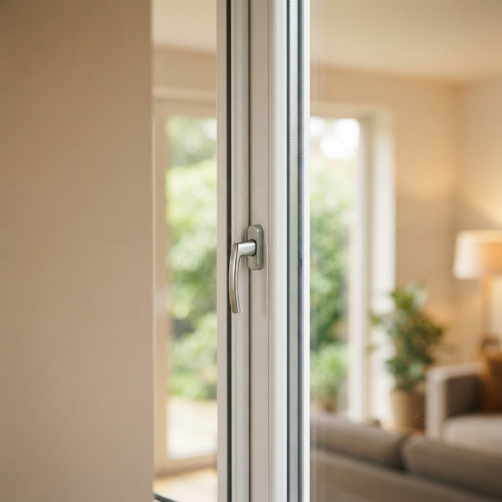

Чистка оконных стекол проводится в Северо-Западном округе — что важно знать
Содержание
Правда ли, что чистка оконных стекол проводится в Северо-Западном округе только в тёплый сезон? Нет, в СЗАО Москвы мы моем оконные стекла в квартирах и офисах круглый год по заявке.
Что важно знать, когда чистка оконных стекол проводится в Северо-Западном округе
Миф о том, что оконные стекла моют только при плюсовой температуре, не подтверждается. Чистка оконных стекол в Северо-Западном округе выполняется и зимой, если соблюдены три условия. Первое: в помещении должно быть тепло, чтобы стекло не запотевало при обработке. Второе: для наружной стороны используют незамерзающий состав, который не оставляет пленку на морозе. Третье: после мытья раму и подоконник насухо протирают, поэтому влага не замерзает в уплотнителях. Миф не учитывает технологию: проблема не в минусовой температуре, а в остатках воды на стекле и в профиле. Именно их мы убираем сразу после чистки. В Северо-Западном округе выезд выполняется по районам СЗАО. Время подачи мастера не зависит от сезона. Заявки принимаются на обычные окна, витрины и панорамное остекление. Перед началом мастер проверяет состояние стеклопакета, стыки и уплотнители, чтобы исключить протечки. Если рама разгерметизирована, сначала устраняют источник влаги, затем моют стекло. Такой порядок важен для качественного результата. Чистка проводится снаружи и изнутри. Внутреннюю сторону моют нейтральным раствором, наружную — составом с пониженной температурой замерзания. Жирные следы и копоть убирают до основного мытья, чтобы не размазывать грязь по стеклу.
Как проходит чистка оконных стекол по заявке
Перед чисткой осмотрите стеклопакет: трещины, сколы и разошедшиеся уплотнители нужно заранее обозначить мастеру. Мы моем стекла при температуре наружного воздуха от минус пятнадцати градусов до плюс тридцати пяти. При более сильном морозе наружную сторону не обрабатываем, чтобы не создавать перепад температур. В дождь и мокрый снег работу переносим: вода на стекле не дает получить чистую поверхность. Створки, рамы и фурнитуру после мытья протираем насухо. Для витрин и панорамного остекления используем стремянки и телескопические штанги; доступ к окну с улицы не всегда обязателен. В квартире достаточно освободить подоконник и обеспечить доступ к окну. Защитную пленку и москитную сетку при необходимости снимаем и моем отдельно. Мы работаем по районам Северо-Западного округа Москвы: выезд назначается на согласованный интервал, без сдвига по времени. Качество проверяем после высыхания стекла: при появлении разводов повторно протираем проблемные участки. Делаем качественно — не оставляем подтеков на стекле, раме и подоконнике.
Можно ли заказать чистку оконных стекол зимой в СЗАО?
Можно. Зимой используем незамерзающий раствор и сразу протираем рамы насухо, поэтому миф о сезонных ограничениях не подтверждается. Перенос возможен только при морозе ниже минус пятнадцати градусов, дожде или мокром снеге.
Следующий шаг
Чтобы начать работу, запишитесь на бесплатный замер. Мастер приедет, произведет расчет и зафиксирует итоговую цену в договоре.
Записаться на замер
Бесплатный выезд в удобное время. Рассчитаем стоимость на месте и зафиксируем цену в договоре.
Окна под ключ в МосквеНаши статьи

Ремонт окон недорого в Северо-Западном округе: цены и срокиВ Северо-Западном округе Москвы часто дует ветер, поэтому исправная фурнитура окон критически важна для комфорта жителей. Ремонт окон недорого в Северо-Запад…